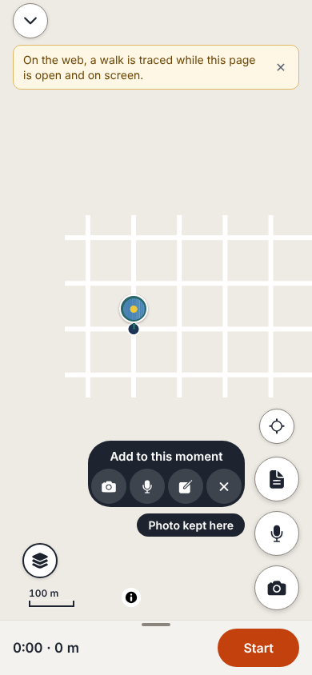
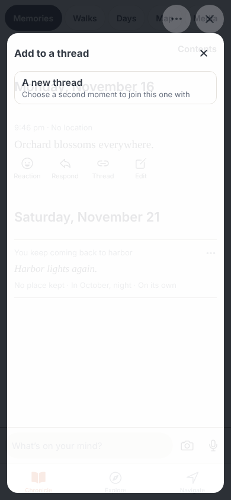
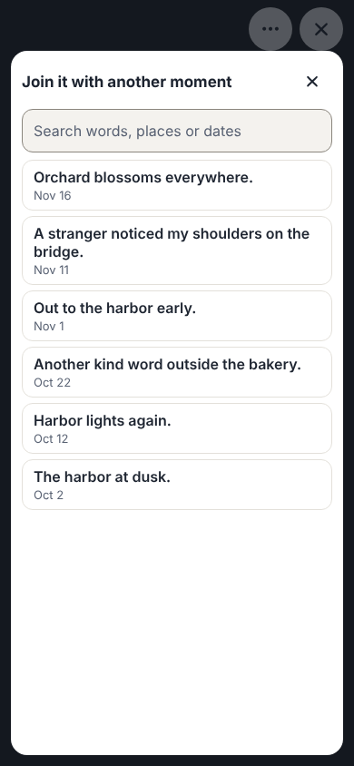

Each band shows today's screen from the web build at 390 × 844 beside the change, drawn at the same size with the app's colours and words. It is the look of entry G11 (decision 0253), from your /investigate of Nov 21: murals and graffiti grouped on the walk, with no scrolling back.
Your calls: Thread on the after-capture pill · the card opens on the thread last added to, with a search · one tap per capture, no mode · a thread still needs two moments, this walk's offered with their pictures, then an optional name.
Dashed outline: what is new. Pictures in the picker rows are coloured stand-ins for your photos. Native has never been run; these are the web build's sizes.
1. Right after a capture

TodayShot 95-stacks-pill: camera, mic, note, ×.
Add to this moment
AfterThread, the link mark, before ×. Spoken "Add this moment to a thread". The label and the other buttons are unchanged (MS6).Choice: Thread sits before ×, so "Not now" stays last.
Add to this moment
After, 320 pxFive buttons do not fit on one row left of the stack: three, then Thread and ×. Every target stays 44 px.
Rests on MS2 as decision 0253 amends it. It does not: add a count, a colour or a sound; ask anything before the shutter; replace the editor that opens first (0240).
2. With Group captures on
Adding to this momentNew moment
Today (drawn)"Adding to this moment" and New moment (MS19, MS21).
Adding to this momentNew moment
AfterThread between the words and New moment; the words wrap to two lines. It threads the open moment, every piece with it.
3. Thread tapped: the card

TodayFrom the viewer's More, with no thread yet (taken as the card fades in, so the journal shows through). With threads, they follow A new thread, headed by place and date; this step has no search.
Add to a thread✕
Search threads and moments
Last added to
Muralsa few moments, since November
A new threadChoose a second moment to join this one with
Complimentsseveral moments, since September
Fox Point, Oct 20a couple of moments, since October
AfterThe thread you last added to is first, under "Last added to": one tap adds the mural. Then A new thread, then the rest, newest first.Choice: the search box is closed until tapped, so the keys do not cover the first row.
Add to a thread✕
mur
Threads
Muralsa few moments, since November
Moments
mural behind the laundromatFox Point, Nov 2 · From Sunday morning walk
keyboard
After, searching"mur" finds the thread by its name and a moment by its words. A moment chosen here starts a new thread of the two.
The size of a thread is said in words, as today ("a few moments"). The mark is the link icon of a thread you made (0105). Nothing is named or suggested for you.
4. The first mural of a series: A new thread

TodayNotes only in this test's data. A photo with no caption reads "Photo" here, with no picture, and nothing from the walk you are on is offered.
Join it with another moment✕
Search words, places or dates
PhotoNov 21 · From Saturday afternoon walk
PhotoNov 21 · From Saturday afternoon walk
the bakery smelled like cardamomNov 21 · From Saturday afternoon walk
mural behind the laundromatFox Point, Nov 2 · From Sunday morning walk
VideoFox Point, Oct 20 · From Tuesday evening walk
AfterThis walk's moments first, newest first; a photo or video shows its small picture beside its place and time, never alone. A note or memo keeps its words.
Connected✕
The two moments are a thread now.
Murals
Leave it unnamedDone
keyboard
After, namingOnce the two are joined, an optional name field ("Name this thread" until typed in). Empty is fine: the thread is headed by place and date as today.Choice: the words "Leave it unnamed" and "The two moments are a thread now."
A thread still needs two kept moments (0104, OT6); there is no thread of one and no mode that captures into a thread. A third mural then takes two taps: Thread, then "Murals" under Last added to.